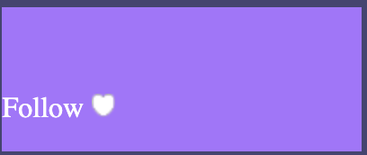
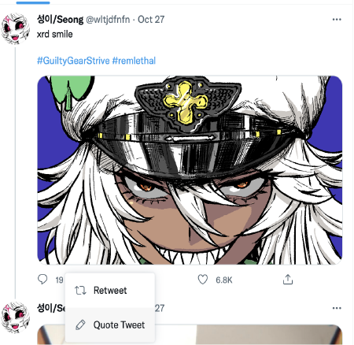
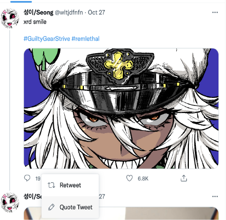

Twitch Subscribe
Hero Image
Overview
My Case Study is about the process and creation of three different microinteractions, with one final build of the accumulated knowledge I gained from IDM 418, and applied it to making a microinteraction that can be an improvement to the original microinteraction. With Trial and error to reach the Final version of a microinteraction./
Context and Challenge
My design process was to improve some aspects of Twitter microinteractions, with the ability to make them active and apart of a microinteraction rather than a quick snap to a different color when clicked on. I tried to add onto twitter with my beta, and the Youtube Like and Dislike for my Final, but remaking a follow button representing the Twitch.tv button of the same name made it easier to complete that goal without overwhelming myself with too many microinteractions.
The goals are to make the css and javascript animation work and exceed against the original version of the follow button due to the microinteractions it was given
Process and Insight
Alpha and Beta Concepts
 

The Solution
Would you like to follow Bob Ross?
Follow 
This is a microinteraction that is a simple two button prompt, with it's seperate hover states, and having the ability to flip the animation depending on which place you click on the button, Making it more interactive and a better experience, along with making sure that the user wants to follow the twitch streamer.
Link to Final Build of Project
The Results
The Project made me successful in making a specific microinteraction of something that I tho=ught didn't have any sort of fluidity. Along with learning and understanding the goals and limitations of what you want to create, and what you can actually create.